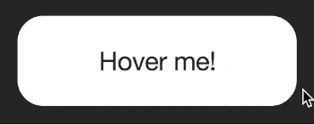
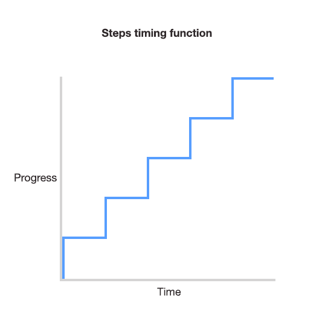
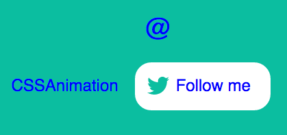
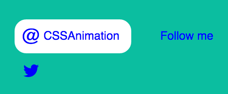
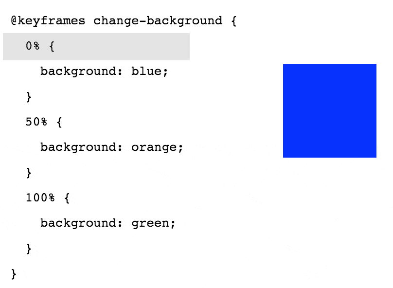
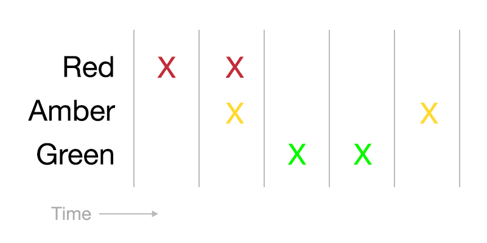
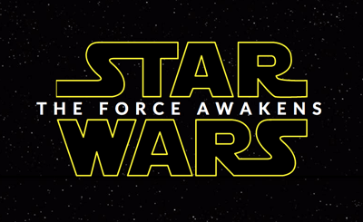
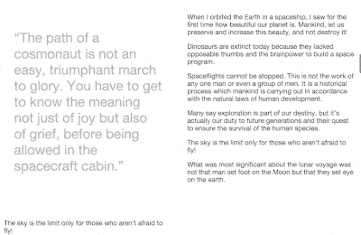

“Tell me and I forget. Teach me and I remember. Involve me and I learn.” Benjamin Franklin
Welcome to CSS Animation 101, and thank you for choosing this book.
I’m delighted you’ve chosen to learn CSS animation. This book is a light and fun introduction to the topic, and I hope you find it helpful. We’re going to learn about CSS transitions and animations. By the end you’ll have a good understanding of CSS animations as well as the tools to create and experiment with our own.
There will be both theory and practical examples. We’ll learn how to easily create your own working environment, and look at lots of examples of animation along the way.
I’ve been writing articles about CSS and other topics for the best part of a decade. I’ve also been designing and developing websites since the late 90’s. More recently, I’ve written for Smashing Magazine, Net Magazine, Tuts+, Adobe Inspire and more. I post random stuff at Hop.ie, and this year I’ve been writing tutorials on CSSAnimation.rocks, all about advanced and useful animations in the browser.
During my days I work as a designer and front-end developer, and I’m a big fan of combining UX principles with fun animations in design. In the evenings I write blogs and try to make sure I’m aware of what’s happening in the world of web design.
This book is an introduction to the topic of CSS animation, but along the way we’ll cover a lot of material. The goal is to make sure we understand what the transition and animation properties are for, how they work, and see them in action.
By the end of this book you should be confident enough to begin applying animation to your projects.
Here’s what we’re going to cover.
First: What’s animation anyway? This week we’ll look at why we animate. We’ll also introduce the transition and animation properties and some sources of inspiration.
Then: All about the transition property. We’ll learn how transitions work, and the properties we can control to change the movement.
After that: We’ll take on the animation property, and learn how to create keyframes that go beyond simple transitions.
Lastly: Bringing it all together. We’ll put together some advanced examples that make use of both, look into how we can make sure our work is accessible, and share some helpful CSS resources we can apply to projects, and JavaScript tools we can use for more advanced effects.
I love to hear from you with your questions and thoughts. Feel free to drop me an email at donovan@cssanimation.rocks, or tweet me at [@donovanh](https://twitter.com/donovanh) at any time.
If you’re new to CSS, it might be worth taking time to get familiar with the concepts. You don’t need to be an expert in CSS. If you know what a property is, you’ll be fine.
Some online tools and resources you might find helpful:
You’ll notice each chapter ends with a little homework section. This is entirely up to you but if you like you can use this to help with your learning. Each homework section will have a suggestion for something to try or think about. Give it a little time and you’ll find your understanding of CSS animation will be even better.
Ready? Let’s learn all about CSS animation!
“Animation is about creating the illusion of life.” Brad Bird
Before we get into the technical side of CSS animation, let’s discuss why we’re animating in the first place.
Animation can convey information efficiently, or it can be used to grab attention but in the end it’s all about communication.
Movement in our designs gives us a more powerful way to communicate. It transcends verbal and written language.
Subtle and appropriate animation can add appeal to our designs and credibility to our work. This happens because as humans we’re used to seeing movement all the time in the “real” world. Bringing some of that life into our work brings the two closer.
As our web browsers continue to improve and better support animation, it’s becoming a more viable option than ever. In many ways animation is as important to web design as the fonts we use and layouts we create.
Animation brings us two main benefits: conveying information and grabbing attention. We can come up with many ways these benefits can help us as we build for the web.
Animation can be subtle, like when the CodePen save button wiggles a little to remind us when we need to save our work:
We’re very good at spotting movement. It’s something we’ve evolved to do. Adding a little animation here and there can introduce some of that “illusion of life” in a very subtle way.
We can also use animation to introduce content to a page:
By animating information onto the page, we give our viewers an extra piece of information that might otherwise be missing. The animation both draws attention to the new content being added and gives context to that new information. Without animation it would just suddenly appear, possibly leaving the viewer unsure of whether it was there all along.
We can use animation to tell a story:
The above is based on an instructional video for the game “Portal”. However, telling stories through our content doesn’t always need to be so literal. We can add subtle movement to show how data changes in a chart, like this example from Sprout:
It’s easy to do too much with animation. Having too many things moving around on the page at once is distracting. It’s usually a good idea to try to do less animation when possible. Any movement you do add will be all the more powerful.
This might mean only moving a small item on your page. Sometimes it’s ok to do less.
Having said that, if you want to create more of a “wow” effect with larger animations, you can do so. If you do, make sure and stop when it’s time for your viewers to focus on the content. This example from Rally does just that, with lots of movement going on that stops when it’s time to read the menu content:
Animation has a long and rich history. I recently wrote a post on Principles of Animation for the Web. The principles draw from Disney’s 1981 book The Illusion of Life: Disney Animation.
If you want to go further, dig into the Animator’s Survival Kit videos. YouTube is full of sources of inspiration and ideas.
For loads of great examples, take some time to browse Hover States. This site features all sorts of interesting examples of animation from the web. Dribbble.com is helpful also.
For example, here’s a nice example from Dribbble showing Google’s Material Design principles. Searching for “animation” is a great way to find inspiring ideas.
I also regularly check up on what’s happening at CodePen. It’s a great source of canvas and web animation examples.
Think about your own work and how animation might help.
It’s tempting to go crazy and animate all the things, but try to look for ways subtle animation might better help your visitors understand the content. Is there a call-to-action on your page people are missing? Is there a sudden change in your page that’s happening too suddenly, and could benefit from a smoother transition?
Lastly, take a look at sites like Hover States and Little Big Details and Dribbble. These sorts of sites help if you’re ever stuck for ideas.
“You don’t learn to walk by following rules. You learn by doing, and by falling over.” Richard Branson
Today we’re going to look at ways we can build and see our CSS animations in the browser. Before we get started with the coding, it’s a good idea to have a workflow that makes it easy to get started.
We’ll cover two ways of doing this: developing in the browser, and developing offline (locally).
The simplest way to get going for small experiments is to develop online. A site I often use is CodePen. Another good one is JS Fiddle.
For the rest of this course I’ll be using CodePen for examples and it’s worth being familiar with the way it works.
CodePen is a coding playground that involves an edit mode where you can make changes to HTML, CSS and JavaScript and see the results immediately. The screen is divided up into four areas. The preview content, the HTML area, CSS and JavaScript. Within each is a settings option that allows you to configure languages (Sass instead of CSS for example) and other cool stuff.
For more involved projects, I prefer to develop offline. There are ways to do so that can be efficient and quicker than working in the browser.
The most simple option is to create a HTML file (filename.html) and an associated CSS file (filename.css) and link the two in the HTML. This is ok, but can be slow with lots of flicking back and forth between the browser and the editor.
I’ve created a set of HTML and CSS files you can copy and use to begin creating. Download them here.
You can of course use whatever tool you find comfortable to create web pages. All you really need is a text editor. Some other tools come with more fancy visual editing, and if that’s your preference, go for it.
Personally I’d recommend trying to get to grips with the code. Understanding the way the CSS works will help when it comes to fixing issues, or creating more expressive effects that visual tools can provide.
If you’re familiar with Github, Node and checking out code, you might want to set up a development enviroment on your own machine.
I am a big fan of Gulp. Being Node-based, it’s very fast. Modules can be put together to process Sass into CSS, autoprefix for browser support and sync browsers so that you don’t need to keep refreshing each time you update the code.
If you’ve used Grunt or other build tools, the process should be familiar.
I’ve created a Github repo to make local development faster. If you’re comfortable with using Git, go ahead and follow the readme for setup instructions.
Do improve it if you wish and push the results back. Teamwork!
As you learn CSS animation, feel free to try different ways to create your code. You might want to host it yourself, or you might prefer to use CodePen. Either is good. Make sure you can get from idea to code as smoothly as you need to.
Register with CodePen. Have a go adding some HTML and CSS, and see how the results change in response. It’s also a good idea to check out some of the featured CodePens on the home page, and see how it’s done.
Optional: If you want to try local development, download local starting files:
Next: We’ll be talking about transitions!
Let’s look at the transition property.
Browsers used to be much more simple. It wasn’t so long ago that they couldn’t render images or handle more than a handful of fonts. Then CSS gave us power over how web pages look and feel.
Animation in browsers isn’t new. Flash, Canvas and other JavaScript options have given us ways to animate but more recently CSS has become a viable option.
One way CSS lets us control animation in the browser with the transition property. In browser terms, a transition is an animation from one state to another.
When we use a transition on an element we tell the browser that we want it to interpolate, or automatically calculate, the change between states.
For example we can change an element’s style on hover, apply a transition, and the browser will create a smooth animation between the element’s starting style and it’s new style.
When we use a transition on an element, there are all sorts of properties that change how the transition works. We can make it slow or fast, delay it, and even control the rate of change using timing functions. We’ll delve into what these mean next week, but here’s a nice example of what happens when we combine several transitions:
Another example of combined transitions:
Soon we will discuss how to use transitions to make these sorts of movements.
A transition is the change from one state to another. For example, when hovering over an element, its style might change. Transitions allow the change to become a smooth animation.
How’s your creative environment looking? How about taking a look into the code, and looking for the transition property in the CSS. Can you see what it’s doing?
Next time you’re browsing the web, look for examples of transitions as you navigate web pages. Look for interesting changes such as when a new element is added to a page, or you hover over a button. You’ll find the web is full of subtle animation once you start looking for it.
Next: An overview of the animation property and how it differs from transition.
So far we’ve discussed why we animate, found some sources of inspiration, looked at tools and sites we might find useful for development, and learned what transitions are.
Next, allow me to introduce the animation property.
Transitions and animations are similar. Both take the form of a CSS property, and have duration, delay and other ways of controlling how the browser creates the movement.
While transitions are all about smoothing the change from state A to state B, animations are a way to describe multiple steps.
Animations are useful for more complex movement in the browser. In the above example, there are 3 states (A, B and C). A transition would only go from A to C while an animation allows us to specify what step B looks like and make sure the animation follows all three steps.
Animations also behave a little differently. They can begin automatically. While a transition might require adding a class or a change of state such as hovering, animations can start when the page loads.
This means that if telling a story or drawing attention to something on a page, animations can be a good choice.
The “Save” button movement we see on Codepen is a good example of a practical animation.
It does a great job helping people notice the button.
The effect is made up of a series of keyframes that tell the browser to shake the button from left to right. We’ll dig more into keyframes in greater depth in week 3.
Another example is the landing page for Fabric, an app building platform from Twitter. CSS Animation is used nicely here to help communicate the modular aspect of Fabric, and establish credibility at the same time:
Lastly, an example from a conference teaser site I made last year. This is a CSS Mac Plus, created to show off the welcome message on theWeb.is teaser site.
This CSS Mac Plus is available on CodePen and here’s a step-by-step guide to building it.
Transitions are when the browser animates from one state to another (A to B). They’re usually triggered by an action such hovering over an element, or adding or removing a class using JavaScript.
Animations are more involved, and let you create sequences of animations with as many keyframes as you need along the way. They trigger automatically, and can loop.
We’ll take some time to work on the animation property soon. In the meantime, do look out for interesting uses of animations online, and let me know if you find a good one!
Can you think of ways animations might be used on your web pages? Keep an eye open for animation when browsing. Look out for when something moves in a way that calls attention to itself. In these cases it’s usually an animation.
If you’ve downloaded the starter HTML and CSS, take a look for the animation property. Unlike transitions, animations need a second part, called keyframes. Try changing some values and see what happens.
Now that we have introduced the transition and animation properties, it’s time to delve further into transitions and see some code!
Transitions take place in the browser when an element changes from one state to another. The browser draws the frames between each state automatically to create movement.
A transition is a property in CSS. Just as you’d give an element a height, width, or border, we give elements transitions too.
We can write a transition in CSS like this:
transition: background 0.5s linear;In this case we’re telling the browser that a transition of the background property, will take half a second, and use the “linear” timing function.
The above property might cause a button’s background to change when hovered over:
button {
background: white;
transition: background 0.5s linear;
}
button:hover {
background: green;
}Notice the transition property to the first button reference in the CSS state. This tells the browser to apply a transition to any change of state such as on hover as well as when changing back from the hover state.
If we applied the transition property to the hover state only, it would only transition to the hover state but not back.
Let’s see how this looks in action. I’ve set up a couple of demos. You might find these examples contain some code that isn’t obvious. I’ll be going into greater detail over the next few days, but do feel free to poke around at the values to see what happens.

Here’s a CodePen demonstrating the hover effect. In CodePen, you can make changes to the HTML and CSS and see the results immediately.
The important thing to look for is the any property beginning transition-. I’ve written them out long-hand for demonstration like so:
transition-property: all;
transition-duration: 0.4s;
transition-timing-function: ease-out;This code that tells the browser what sort of movement to generate between the non-hover state and the hover state. It tells the browser to animate all properties (colours, size, position), over a duration of 0.4 seconds.
Try changing some of these values. For example, change the “0.4s” to something longer, like “2s” (two seconds). How does the animation feel? You could change the property from “all” to “background”.
For a fun effect, try changing the transition-timing-function value from ease-out to:
transition-timing-function: cubic-bezier(.59,-0.26,.33,1.42)The cubic bezier timing function is a lot of fun. We’ll cover timing functions in more detail on another day.
When I’ve given code examples, I’ve not included vendor prefixes. This is to make the code easier to read, but if you’re using the code in production they are needed.
I like to use Autoprefixer (it’s an option on Codepen, press the settings “cog” icon in the CSS section), and can be run with build tools such as Grunt or Gulp. Alternately you can manually write them out like this:
-webkit-transition: ...;
-moz-transition: ...;
transition: ...;Edit the button in today’s example and add your own ideas. You could try changing the shape, border, or almost any property. Have some fun, the goal is to make sure you’re familiar with how a transition affects the element’s hover effect.
For some inspiration check out this awesome hover style. There are loads of great examples around if you are looking for ideas.
If you want to go further, try creating a new CodePen with an element that changes from one thing to another on hover. See if you can have an element within it move at a different rate. Don’t worry if you haven’t got to this point yet, we’ll cover the properties in more detail.
Now that we have seen the transition property in action, let’s look at the properties that go into transitions and what they mean.
When writing CSS, we can often summarise multiple properties into one in a shorthand property. For example, padding written as shorthand might look like this:
padding: 10px 20px 15px 25px;This would be the equivalent of:
padding-top: 10px;
padding-right: 20px;
padding-bottom: 15px;
padding-left: 25px;In the same way, we can write a transition as shorthand too:
transition: all 0.5s 1s linear;In this case, the shorthand corresponds to:
transition: [property] [duration] [delay] [timing-function];Each of these properties can be written individually:
transition-property: all;
transition-duration: 0.5s;
transition-delay: 1s;
transition-timing-function: linear;Let’s look at each of these properties.
Usually stated first in the shorthand, this is the property that the browser will animate. To change the background for example, background could be used. It’s also possible to use all to have all applicable CSS properties transition.
A transition-duration value tells the browser how long the transition will take. A transition-duration of 3s (three seconds) will be three times longer than a transition-duration of 1000ms.
The transition-delay property tells the browser to wait before applying the transition. This is a time value, and it can be specified in seconds or milliseconds. For example, 3s would be three seconds and 100ms would be one hundred milliseconds. Equally, you could write that as 0.1s. It’s up to you.
Both transitions and animations make use of timing functions. There’s a lot to these, so rather then try to cram it in here, we’ll talk more about timing functions tomorrow. Timing functions can really add life to your animations.
While you can use transitions on positioning, size, colour, border, background-position and many others, there are some that cannot be transitioned. The font-family cannot be transitioned, as this would mean trying to generate frames between two very different font images.
Background images created with CSS, such as generated gradients, cannot have their properties animated. This would mean the browser recreating the background image with each frame of animation, so it’s not supported.
However you can animate things like opacity and background position. By moving background images around or hiding them you can create interesting effects.
See it in action on this Baymax example where a background image is moved to create the animation.
A similar effect is used on this button sheen effect, where the background gradient is animated across the front of a button.
I’ve created a basic Codepen to try out transitions.
At the moment it’s set up to transition from a diamond shape into a circle. Try changing some of the attributes, to see what happens.
If you’d like to go further, press the “Fork” button to create your own version and you can then save your work to your own Codepen account.
The timing function is a description of the rate at which the speed of the transition changes. Animations look lifeless when they occur at a fixed, linear pace. Using timing functions can make transitions more life-like.
For example in this first image the transition uses a linear timing function:
For this example we’re using customised cubic-bezier timing function:
The cubic-bezier approach in this case tells the animation to rock back a little before quickly moving to the second state, and actually goes a little past it before correcting back.
The CSS for the beginning and hover state of each example is the same, all that’s changed is the timing function.
Let’s go through each and learn how they impact the way our elements move.
If you’d like to play with these in an example, I’ve set up a CodePen here.
A linear transition moves at a steady rate from beginning to end. Since there’s no curve in the transition, it never accelerates or decelerates. This can be useful if making animations that need a steady movement, like the scenery moving past the background of a train window or a steadily rotating moon.
The ease-in timing function begins slowly and accelerates toward the end of the transition. It would be similar to a ball beginning to roll down a hill, finishing at the fastest speed at the bottom. Or perhaps a bored fish swimming left and right.
Ease-out is the opposite of ease-in. It starts fast and slows down toward the end of the transition. Useful for when something needs to appear as if it was rushing from off-screen and slowing down to stop.
Ease-in-out is a combination of both the ease-in and ease-out functions. It begins slowly, accelerates through the middle part of the transition, then slows toward the end. It could illustrate a car starting from a standstill, accelerating, then slowing down before stopping. If making a loading animation, something like this can look pretty good.
All the timing functions we’ve seen so far are examples of cubic bezier curve. This is a curve that describes the “shape” of the timing function.
In this way, specifying a cubic-bezier timing function is like creating a timing function of our own.
They consist of 4 values, representing two co-ordinates. A cubic-bezier can look like this:
transition-timing-function: cubic-bezier(1,-0.49,.13,1.09);The two co-ordinates here are (1, -0.49) and (.13, 1.09). On a graph, they look like this:
Rather than create these by hand, I use cubic-bezier.com. It’s a great way to create some interesting effects.
They really get fun when using values greater than 1. It’s possible to create transitions that overshoot, and bounce back.
Where most of the timing functions involve curves, the steps function divides the transition into a set of steps and jumps between each. For example, if you specify steps(4) the transition divides the duration into 4 discrete jumps (pictured above).

This is useful for sprite animation. For example, a loading spinner or animated video game character. By setting the background position at the beginning of a series of frames, the steps timing function can then be used to jump through each frame and create the appearance of movement.
To see a good example of this in action, check out the Twitter fave button animation.
You can also specify whether the transition holds the first frame for the fragment of the duration or whether it holds the final frame. The default is end, as this assumes that the first frame in the sprite is already showing before the animation begins.
We can specify which applies when setting the steps:
transition: all 2s steps(10, start);
transition: all 2s steps(10, end);I’ve written on the subject of timing functions here if you’d like to read more and see other examples.
## HomeworkFollowing on from the previous homework example try changing the transition-timing-function value and see how it changes the way the transition feels.
You can also try changing values on this demo. Technically it’s an animation rather than a transition, but the timing function applies in the same way.
So far we’ve covered how a transition creates the movement between one state and another. Next we’ll see what happens when we apply a single transition to an element with multiple changes, and how to use multiple transitions together to subtly improve our animation.
While we’ve seen a simple button hover effect already, we can combine multiple transitions into a single button for a more interesting effect.
In this example a hover effect combines several changes of state, but all are defined by a single transition:
transition: transform 0.4s cubic-bezier(.72,-0.61,.25,1.51);Here’s how it works. The button is made up of two icons and two pieces of text. The initial (non-hover) state is that the “Follow me” text and Twitter icon are positioned inside the button. I position the @ symbol and the “cssanimation” text outside the button like so:

Then I add a hover state, in which the elements outside the button are positioned inside the button, like so:

I do this using CSS transforms. For example, the Twitter symbol is positioned using absolute positioning. When setting it up I positioned it where I wanted using left and top values:
.icon {
position: absolute;
left: 0.75em;
top: 0.75em;
}Then I add a hover state for the button and position the Twitter icon outside the button with a transform:
a:hover .icon {
transform: translateY(3em);
}Adding overflow: hidden to the container means that elements outside the button won’t show.
With no transition in place, the icon would suddenly disappear. Since each of these elements inside the button is a span, I can apply the transition to them all at once:
span {
transition: transform 0.4s cubic-bezier(.72,-0.61,.25,1.51);
}This now means that any span elements will be transitioned if their state changes, such as on hover. The same trick is applied to the other parts of the button.
You can see this example in full on CodePen.
In this example I’ve set up a card containing some text, and show the text on hover.
The initial (non-hover) state of the card has the title showing but the paragraph text has an opacity of zero. On hover, we change that to 1 to show the text, and change the height of the text container.
Without transitions, it looks like this. When we hover over the card the change is sudden.
With the addition two transitions to change the mood entirely. Here’s the result.
The first transition (written short-hand this time) looks like this:
transition: all 0.5s cubic-bezier(.48,-0.28,.41,1.4);This tells the browser to animate all properties over a duration of 0.5 seconds and uses the cubic-bezier transition to give it some bounce. It affects the height of the text container in this case.
The second transition makes the text move. Here a ease-out timing function is used:
transition: all 0.4s ease-out;There’s a lot that we can achieve by changing states on hover. In this example the info div’s height and the paragraph are both give new values within the .card:hover state.
In this example we use two transitions so that each of the moving parts moves in a different way. Having elements move at different paces can really help add appeal to a transition.
You can also see this example on CodePen.
As well as using multiple transitions on multiple elements, we can also use more than one transition on a single element.
A case for this is when you need an element’s background to change separately from it’s border. Applying a single transition to all properties might be too crude for both.
We can achieve this by combining multiple transitions into a single declaration. Multiple transitions are separated by commas.
For example:
transition: background 1s ease-out, border 0.5s linear;The first transition here works on only the background, and the second (after the comma) only applies to the border. This means that a hover state that changes the background would take 1 second and the transition of the border would take 0.5 seconds.
In this chapter we looked at how multiple effects could be handled by a single transition, and how multiple transitions can be used together. It’s worth take a look at the CodePen examples for each:
Can you think of ways these sorts of transitions might help in a project you’re currently working on?
We’ve covered a lot so far. Next we’ll take a look at how we can apply these transitions using JavaScript.
So far we’ve been using the transition property in CSS to animate between two states, a non-hover and a hover (or focus) state.
These transitions have required hovering over the element. This isn’t the only way we can trigger animations, so today we’ll cover two ways we can use JavaScript to achieve the same result.
Since the power of transitions is to animate between two states, we can create those states as separate classes. Then we add or remove these classes using JavaScript.
This example consists of a button and a content div. Initially the content container has the class hide. In the CSS, the hide class gives it an opacity of 0.
We also have a second class in the CSS called show. This class has an opacity of 1.
When the button is clicked, we toggle the class of the div between hide and show. To give it animation, we apply a transition to the div also.
See it in action on this CodePen.
If you’d like to read more, you might enjoy the article, Adding Appeal to Your Animations on the Web.
Toward the end of this course we’ll look into how we can trigger transitions and animations on scroll.
We can go further than adding or removing classes. Using JavaScript we can set the CSS properties directly like so:
element.style.transition = 'opacity 1s ease-out';In this case, “element” is an element we’ve selected. For example, if an element has the ID “js-show”, you could apply a transition to it using getElementById:
document.getElementById('js-show').style.transition = 'opacity 1s ease-out';When we do this, we must remember to include vendor prefixes too. The above would need to be written:
document.getElementById('js-show').style.webkitTransition = 'opacity 1s ease-out';
document.getElementById('js-show').style.transition = 'opacity 1s ease-out';Here the webkitTransition applies to any browsers that would otherwise use the -webkit- prefix in CSS.
In this chapter we’ve covered the transition property. We learned we can use this property to tell a browser to animate from one state to another.
Along the way we’ve learned about the various properties: duration, delay, and timing functions.
Putting these together we can create interesting combinations of effects, and even apply multiple transitions to a single element.
Finally, we wrapped it up today by covering how to apply these transitions using JavaScript.
Transitions are but one part of the CSS Animation puzzle. Next we’ll cover the animation property.
Before we start looking at the animation property, take some time to think about how you use transitions.
Can you think of ways they could help smooth the interactions or state changes on your pages? How might they add appeal?
Now that we’ve looked at the transition property, let’s take a deeper look at the animation property.
The animation property is applied to an element just like a transition. It also needs a second part, called keyframes.
.element {
animation: ...
}
@keyframes animation-name {
/* Keyframes go here */
}One benefit of having the keyframes defined separately is that it allows us to create animations that can be reused multiple times.
animation propertyApplying these keyframes to an element is done with the animation property. It is quite similar to transition but with some extra properties. An animation could be written as the following shorthand:
animation: change-background 4s linear infinite;Written as individual properties it would look like:
animation-name: change-background;
animation-duration: 4s;
animation-timing-function: linear;
animation-repeat: infinite;Where a transition takes a property, such as “background” or “all”, the animation property is given the name of the set of keyframes that describe the animation sequence.
Animations have some properties that transitions don’t. For example, we can tell the animation to alternate back and forth rather than looping from the beginning each time.
A set of keyframes in CSS is a series of stops along the way through an animation. Each “keyframe” is a written as a percentage.
I find it helps to describe this using an example. Let’s start with a div on a web page that changes background over time. It begins with a blue background, changes to an orange background and then finally green.
If we tried to explain to someone how these background colours changed over time, we might say something like:
“Start with a blue background, then orange background halfway through and finish with a green background”
Or, if we wanted to be more precise, we could use percentages to explain the timing:
“Start at 0% of the way through with a blue background, then by 50% through be orange, and at 100% have a green background”
We could then summarise this as:
0% Blue
50% Green
100% OrangeWith these percentages we’ve created a series of “waypoints” that an animation might pass through. All we need to do now is tell the browser that these percentages are in fact keyframes and give the animation a name. The result is this:
@keyframes change-background {
0% {
background: blue;
}
50% {
background: orange;
}
100% {
background: green;
}
}The animation is called “change-background”. We’ll use that later when applying the keyframes to an element.
As you read the code from the top down, the percentages are describing how far through the animation each of these keyframes takes place. We can see it in action here:
As the animation takes place, the browser creates the in-between frames needed to go from each of the background colours to the next. By telling the browser that we wanted the div to begin one colour, be another one half way through and finish on a third, the browser can do the work of creating the animation between each of these points.
I’ve put together a CodePen example showing this in action.
Earlier, I mentioned using the animation-direction property to have an animation alternate. Here’s how it would look:

In this case I’ve changed the animation-direction property to alternate. See it on CodePen here.
For the moment it’s still necessary to use the -webkit- prefix on the animation property. I won’t add it to examples, but it will be needed for your animations to work in browsers such as Safari.
In CodePen you can use the “Autoprefixer” option within the CSS settings. For local development, I use the Gulp version of Autoprefixer. Prefix Free is a decent alternative also.
Open up this keyframes example and try changing the code. See if you can break it, and fix it. Even better, if you come up with something cool, let me know!
I love seeing how you’re getting on. You can email me or get in touch on Twitter.
Before we work on more animation examples, let’s take a look at each of the animation properties.
Like the transition property, the animation property can be written using shorthand, or any of these properties can be specified individually.
Similar to transition-delay, we can use this property to make the animation wait before starting. This can be particularly useful in situations where there are multiple animations taking place.
If the animation loops, the delay does not apply each time it loops. The delay only applies to when the animation is applied to the element.
It’s actually possible to give this property a negative value, such as -1s. This would cause the animation to start as if a second has already elapsed.
Animations normally begin at 0% and finish at 100%. Using animation-direction we use the values normal, reverse, alternate and alternate-reverse to control the direction.
“Reverse” causes it to play (and loop) from 100% to 0%, while “alternate” plays from 0% to 100% and back again to 0%.
This is the length of the animation. Similar to transition-duration, this takes a value such as 1s for one second or 200ms for two hundred milliseconds.
By default, an animation will play and then the element returns to its normal state. Using animation-fill-mode we can have the animation “stick” at either the end or beginning state.
Using the value forwards tells the animation to finish and stay on the last keyframe. The value backwards returns to the first keyframe when the animation finishes.
An example of this is the bouncer animation on Hop.ie. The animation plays once and finishes on the last frame. This is using the value forwards.
This is the number of times the animation plays. By default it will play once. You can specify a number, or “infinite” to have it loop forever.
The animation-name refers to the keyframes associated with the animation. For example, if the animation-name is set to “foo”, it would use a set of keyframes like:
@keyframes foo {
...
}If you ever need to pause or resume an animation, this property lets you do so. It takes the values of running or paused, with the default being running. One idea might be to set this value on an animation using JavaScript.
This takes the same values the timing function property in transitions, but behaves a little differently. While a timing function, such as ease-out applies to the entire transition, the timing function of an animation applies between each keyframe.
This means that the following keyframes would see the animation starting fast and slowing toward 50%, then picking up fast and slowing down before 100%.
@keyframes foo {
0% {
/* Animation starts fast and ease-out makes it slow down before 50% */
}
50% {
/* Again, starts fast and slows toward 100% */
}
100% {
/* fin */
}
}This can be tricky to work with. Often when creating keyframe animations I’ll choose the linear timing function and handle the way the animation is paced using keyframes.
Having said that, cubic-bezier timing functions can create some great effects when used with animations, so have a go.
It’s worth noting that when you specify a timing function for an animation, the timing function applies to each keyframe of the animation.
This means that if you were to specify four keyframes, the timing function would apply to each. An ease-out function would slow down as it approached each keyframe.
For that reason we would usually define the timing function for animations as linear, and control the pacing on a per-keyframe basis:
@keyframes my-animation {
0% {
...
animation-timing-function: linear;
}
50% {
...
animation-timing-function: ease-out;
}
}In this case the first half of the animation will be linear, and the second half would use the ease-out timing function.
I’ve created a simple keyframe animation here on CodePen. The properties are listed in the CSS. Try changing some of these properties, and see what happens.
So far we’ve been introduced to the animation properties, and had a chance to see how it relies on keyframes. Next we’ll cover keyframes in greater detail.
There are a couple of things about keyframes I’d like to cover before getting into a practical example. The first is an alternate syntax you may see, using the keywords from and to.
@keyframes name {
from {
...
}
to {
...
}
}While this is simple an alternate way of writing 0% and 100%, it can be simpler to understand and useful for simple animations.
You may have noticed that sometimes more than one percentage value is used on the same line. This is a way to have the animation pause for a while, or hold a particular state.
For example:
@keyframes name {
0%, 20% {
opacity: 0;
}
100% {
opacity: 1;
}
}This example will have the element start with an opacity of 0, and stay invisible until 20% through the animation, at which time it will then begin to animate toward an opacity of 1.
We’ll make use of this tomorrow when we have multiple animations we want to stay in sync with each other.
Remember the “Save” button example from back in week 1? Let’s revisit that example and look at how keyframes are used along with the animation property to create the effect.
Before adding any animation I added some basic styles to a button to make it look like CodePen’s. An orange border at the top, dark gradient and white text. I’m using absolute positioning in the demo to make sure the button is in the middle of the screen.
The first thing I generally do is apply an animation property to the element. Like so:
button {
animation: wiggle 2s linear infinite;
}In this case we’re applying a set of keyframes called “wiggle”, and the animation runs for two seconds with the “linear” timing function. There’s also a new attribute here, infinite.
The “infinite” value here is for the property animation-iteration-count. We can have animation repeat a set number of times, and by default they repeat once. In this case it’ll repeat an infinite number of times.
Next, we plan out what these keyframes are for the “wiggle” animation. Here’s the result:
@keyframes wiggle {
0%, 7% {
transform: rotateZ(0);
}
15% {
transform: rotateZ(-15deg);
}
20% {
transform: rotateZ(10deg);
}
25% {
transform: rotateZ(-10deg);
}
30% {
transform: rotateZ(6deg);
}
35% {
transform: rotateZ(-4deg);
}
40%, 100% {
transform: rotateZ(0);
}
}What we have here is a series of waypoints for the browser to animate between. Each one rotates the “Save” button on the z-axis. The angles start bigger and get smaller over the course of the animation.
Here’s how the animation tilts the button back and forth over time:
We can see that the browser creates the in-between steps between each keyframe. Without relying on fancy timing functions, this animation manages to add a lot of character to the button.
Here’s a CodePen showing the Save button wiggle in action.
I’ve created a new CodePen with a single animated element. It makes use of an “animation-timing-function” within the keyframes and has a series of keyframes creating a relatively complex animation.
What happens when you take some frames away? Or change the percentage values? Can you make the cube do something else? See if you can create a feeling of “life” in something so simple!
In this chapter we’ll be looking at how we can make use of multiple sets of keyframes running at the same time.
There are times when we want multiple animations on a page to stay in sync, but at the same time each animation has its own timing. A good example that illustrates this is traffic lights
Here we have a simple (UK-style) traffic light pattern:
We have three lights, each with their own pattern of being off and on. We can create this by giving each light their own animation.
.red {
animation: red 10s linear infinite;
}
.amber {
animation: amber 10s linear infinite;
}
.green {
animation: green 10s linear infinite;
}We have three animations, one for each light. Each animation lasts the same length of time so that when they loop, they won’t go out of sync. Next we need to plan the keyframes.
When creating this example I found it helpful to think of the lights as a grid. The animation happens from left to right, with each light being on or off at certain times.

The grid is divided up into 5 columns. This means that we can deal with “chunks” of 20% and create sets of keyframes from these chunks.
Taking each light one at a time, we can start with the red light. It would be on for the first and second chunks, then off for the rest of the animation. The resulting keyframes:
@keyframes red {
0% {
background: black;
}
2%, 40% {
background-color: red;
}
42%, 100% {
background: black;
}
}I’ve added a 2% gap at the beginning and had the third part of the animation begin at 42% as this adds a little bit of a fade to the way the traffic light appears. It’s the subtle stuff that makes all the difference.
With the red light done, we look at the amber light on the grid.
The amber light is off at the beginning, on for one chunk, then off for two chunks, and finally on again. The keyframes for this light:
@keyframes amber {
0%, 20% {
background: black;
}
22%, 40% {
background: #FF7E00;
}
42%, 80% {
background: black;
}
82%, 100% {
background: #FF7E00;
}
}Lastly, the green light. This light is off for the first two chunks, then on for two, and finally off for one.
@keyframes green {
0%, 40% {
background: black;
}
42%, 80% {
background: green;
}
82%, 100% {
background: black;
}
}We can put it all together and see it in action.
For more reading on the subject of keyframe syntax, do check out CSS tricks article on the subject.
Today’s homework is a challenge. The traffic light example might look strange to you as it follows the UK pattern.
Can you start with the traffic light example and change it so that it works more like traffic lights in the USA or elsewhere?
We’ve covered a lot of detail so far! I hope it’s making sense.
When learning this, I must admit it took me a while for this animation and keyframe stuff to make sense to me. If it’s not clear yet, don’t be frustrated. Keep at it, and bit by bit the various tricks of using animation in HTML and CSS will become clear.
In this chapter we’re going to take a moment to recap what we learned this week. But first, we’ll take a look at that homework challenge!
The homework challenge should have been easy. Well, it’s easy if you know how. I’ve created an updated version of the UK-based traffic light demo, this time changing the sequence to remove the “red + amber” stage.
See it in action here. I’ve made the colour scheme match what Google suggested American traffic lights look like.
This week we looked at the animation property and how it works alongside keyframes.
While the animation property looks and works in a way that’s similar to transition, it has some subtle differences. While a transition will only occur when an element changes, animations can begin straight away.
Using the various properties, animations can loop a certain number of times (or forever), and can even begin with a negative value for their delay. This starts the animation with it already having progressed.
By default, animations will play from start to finish, then jump back to their default state. We can have the animation freeze at its end point by using the animation-direction property of forwards.
Animations use timing-functions, much like transitions. However, the timing function applies to each individual keyframe, not the entire set of keyframes. Instead, you can specify animation-timing-function within a keyframe for more granular control.
Finally, animations can be specified in shorthand, just like transitions:
animation: keyframe-name 2s forwards linear;Every animation needs to reference a set of keyframes. These keyframes are a series of percentages, describing each “stage” of the animation. The browser fills in the gaps automatically.
Keyframes have their own shorthand (to and from) when you want to only go from one state to another.
Stacking percentages beside each other can have the animation “pause” at that stage.
Lastly, it’s possible to omit the 0% keyframe and the browser will take the element’s style as implied. For example, to have something fade away, we don’t necessarily have to give it a starting opacity of 1 (assuming the element is already visible):
@keyframes name {
100% {
opacity: 0;
}
}When we want to use an animation, we always have the two pieces:
.element {
animation: keyframe-name ...
}
@keyframes keyframe-name {
...
}At this point we should be clear on the different between the animation property and the transition property.
Have a look at some of the Principles of Animation for the Web examples. Each is made entirely with HTML and CSS, using keyframe animation. Try forking one and see what you can do with it.
Now that we’ve covered both the transition and animation property, let’s combine both into an animation with a hover effect.
Many sites like to make use of a large, attention-grabbing image at the top of their homepage. Sometimes called a “hero image”, this is usually a full-width banner style element.
A nice example I found recently was the Fabric landing page. A CSS animatiom shows how Fabric works as a modular framework.
Another interesting example is the Mailchimp homepage. Here the hero image tells a story by demonstrating how emails are created.
You may have also seen it in action on my CSS Animation 101 email course landing page:
In each of these examples, they use animation to set the tone of the page and illustrate what the site is about.
Let’s create an example of our own. In this example I’ve created a “web page” style graphic that moves up and down the screen.
For a bit of interactivity, the animation pauses and a message is shown when a mouse cursor hovers over the screen. It makes use of both animations and transitions to achieve this effect.
To set up this example we begin with the HTML element to contain it:
<div class="screen"></div>We can make the “screen” div look like a monitor or iPad using some styles:
.screen {
background: #e25865 url(//cssanimation.rocks/screen/images/screen_bg.png) no-repeat top center;
background-size: 100% auto;
border: 2em solid #fff;
border-radius: 1em;
width: 40em;
height: 30em;
}We have some styles here defining the size and border, and setting a background image.
The effect we’re creating is based on moving a background image. The background image is taller than the screen and has a background-size of 100% auto. This means the background will fit the width of our container but be taller.
With a background image to animate, we can now write the keyframes that make it look like someone is scrolling a web page:
@keyframes scroll {
0%, 10% {
background-position: 0 0;
}
20%, 30% {
background-position: 0 -22em;
}
50%, 60% {
background-position: 0 -44em;
}
90%, 100% {
background-position: 0 0;
}
}The property we’re animating is background-position. With this property we can move it up and down. It begins at 0 0, which means zero distance from the left, and zero from the top.
In the next frames we have the background move 22 ems up, then 44 ems up, then return to the top of the page. Let’s create an animation property to apply this to the “screen” element.
.screen {
animation: scroll 5s infinite cubic-bezier(.52,-0.39,.3,1.43);
}This CSS is applying the a set of keyframes called “scroll”, telling it to take 5 seconds, run forever and use a cubic-bezier timing function. In this case the cubic bezier function gives the animation the bounciness as without it the movement would look less lifelike.
I generated this bezier over on cubic-bezier.com. If you haven’t bookmarked that site yet, I’d absolutely recommend you do!
It’s a good idea to pause or stop an animation once it’s finished or when you want people to concentrate on something else. Constant animation can be distracting, so let’s make use of animation-play-state to pause the animation when on hover.
.screen:hover {
animation-play-state: paused;
}This means that when a cursor hovers over the animation, it will pause. And when the cursor moves away again, it will resume its default playing state.
You can achieve this with JavaScript also. One possibility is to have some JavaScript disable the animation when the user interacts with another part of the page, or perhaps when they scroll away. We’ll take a look at how to enable animations on scroll later.
We can also go further and have a message transition into place when a user hovers over the element. To do this we’ll need a little more HTML:
<div class="screen">
<div class="message">Hover message!</div>
</div>In the CodePen CSS we position this message in the middle of the “screen” and make it invisible.
.message {
/*... positioning styles ...*/
opacity: 0;
transition: all 0.4s ease-out;
}We can then show it on hover using a transition:
.screen:hover .message {
opacity: 1;
}Since we set a transition on the “message” styling, it creates the animation both when the cursor hovers over the element and when it leaves. The paused animation and transition effects look like this:
In this chapter we combined both an animation and a transition to create an effect that could be useful for landing pages and product tours. We made use of the animation-play-state to make sure the animation stopped when we wanted it to.
Take a moment to think about what we’ve covered so far.
We covered a lot. Combining animations and transitions is a powerful way to bring pages to life.
When thinking about how this can apply to your work, think about how it might be controlled too. When might animation work for your users’ benefit, and when might it work against it? It’s great to know how to animate but even better to know when not to.
Get out the popcorn! In this chapter we’ll have some fun making an SVG animation. We will be building the Star Wars movie title from the “The Force Awakens” trailer.
This example combines CSS animation with some other CSS properties you may find helpful, specifically the transforms scale, translate and rotate.
While it may sound like it creates an animation, the transform property is in fact used setting a static position, skew or scale of an element. We can use it to create great effects but to do so we need to have a different transform for each keyframe or state we animate.
We can make elements larger or smaller using scale. Using translateZ we can move elements in the Z-axis. This axis would be the one represented by drawing a line from you, through the monitor.
In this case we’ll be using a combination of scale and translateZ to make it look like some words are flying through space.
Lastly we’ll use rotateY to spin the letters of the tagline. Rotating around the Y-axis will require a bit of 3D work in the browser.
In preparation for this example I made two SVG files for the Star and Wars parts of the logo. Do feel free to grab them to use if you want to play along.
The HTML for the demo is as follows:
<div class="starwars-demo">
<img src="//cssanimation.rocks/demo/starwars/images/star.svg" alt="Star" class="star">
<img src="//cssanimation.rocks/demo/starwars/images/wars.svg" alt="Wars" class="wars">
<h2 class="byline" id="byline">The Force Awakens</h2>
</div>A static image of some stars is used for the background. The font in the byline was tricky to find, so I’ve referenced the web font “Lato” in this example.
With some absolute positioning to position the content in the middle of the screen, we begin with this:

We want the larger text to fade into view, while also starting larger and getting smaller over time. This is a good case for the scale() transform. Let’s use it on the word “Star” with these keyframes:
@keyframes star {
0% {
opacity: 0;
transform: scale(1.5) translateY(-0.75em);
}
20% {
opacity: 1;
}
89% {
opacity: 1;
transform: scale(1);
}
100% {
opacity: 0;
transform: translateZ(-1000em);
}
}There are two properties that change over the course of this animation. The opacity and transform. The opacity change makes it start transparent, and fade away at the end so that we can loop the animation.
The transform begins by setting the scale at 1.5. This means that the initial size of the text is 150% larger than normal. At 89%, we set the transform property to a scale of 1. This means that between 0% and 89%, the scale goes from 150% to 100%.
The final transformZ causes the words to zoom away quickly.
We can apply these keyframes to the word “Star” like so:
.star {
animation: star 10s ease-out infinite;
}A similar set of keyframes is used for the word “Wars”.
Using 3D transforms in CSS, whether translating along the Z-axis, or rotating around the Y and Z axes requires that we set a stage for the 3D. In HTML terms this means we create a container, and tell the browser that some 3D stuff is going to happen.
We do this by adding the following to the .starwars-demo div:
.starwars-demo {
perspective: 800px;
transform-style: preserve3d;
}These two properties tell the browser that the container’s children should be positioned in 3D, rather than flat. CSS Tricks goes into more detail on the property.
Secondly, the persective property tells the browser how “deep” the scene needs to be. In case we’ve made it 800px. Smaller values create more “extreme” perspective effects as the scene is shorter.
With that covered, we’ll introduce the tagline.
The tagline “The Force Awakens” appears in the trailer with each letter spinning into place. We can create this effect using the rotateY transform. In this case we’ve wrapped each of the letters in a span element, so that we can apply animation to each letter.
An issue I quickly discovered was that there isn’t a straightforward way to animate each of the letters in the byline. My first approach was to manually wrap each letter in a span tag. This worked but made the HTML a little messy. The current demo includes some JavaScript (thanks to Tady for the assist) that wraps each letter automatically in a span.
We’re going to apply an animation to each letter.
First, the keyframes:
@keyframes spin-letters {
0%, 10% {
opacity: 0;
transform: rotateY(90deg);
}
30% {
opacity: 1;
}
70%, 86% {
transform: rotateY(0);
opacity: 1;
}
95%, 100% {
opacity: 0;
}
}To begin with, the letters are rotated 90 degrees, then by 70% through the animation, they’ve been animated to face the viewer.
We can apply this set of keyframes to each span like so:
.byline span {
animation: spin-letters 10s linear infinite;
}The result is each of the span containers that hold each letter will fade and spin slowly into place, before fading away at the end of the animation.
Putting it together we have the finished demo.
If you have time I’d encourage you to take a look through the CSS section of the CodePen version.
You may notice some “media” queries in the CSS. We use these to resize the example for smaller devices. Try changing some of the animation keyframes, or the transform values to see what happens.
A popular use for animation on the web is adding movement to elements when the browser scrolls. In this chapter we’ll take a look at how to do this.
Here’s today’s demo on CodePen. Try scrolling down the page, and see how the quotes and cats fade into place.
Many sites trigger custom animations when you scroll to a certain point. They could start playing a video, trigger a complex keyframe animation, or just have items fade into place to draw attention to them.
In each case, what’s happening is that there’s some JavaScript that adds a class to an element when it’s visible on screen. We can then attach animations to the class, so that the browser scrolling results in the animation starting at the right time.
There are many JavaScript options that add classes, and one I’ve found easy to use is Wow.js. Let’s use it to create a simple example where content fades into view as we scroll.
">
Using Wow.js involves two steps. The first is to download the JavaScript. Place the wow.min.js file in your project’s JavaScript folder. Next step is to reference this file from within your HTML:
<script src="javascripts/wow.min.js"></script>(Assuming your folder is called javascripts - change as needed)
Then, we invoke the JavaScript using this command (paste it after the previous code):
<script>
new WOW().init();
</script>We can now add “wow” classes to our content and Wow.js will take care of working out whether our content is on-screen.
If we have an element we want to animate on scroll, start by making sure it has the class “wow”:
<p class="wow">...</p>This means that when the browser scrolls this content onto the screen, Wow.js will add “animated” to the class, like this:
<p class="wow animated">...</p>If we had an animation on our p.animated elements, the animation would only happen when this class is added.
For our demo, we’ll hide all elements with the wow class, and show them when they have the animated class. First, we hide them:
.wow {
opacity: 0;
transition: all 0.5s 0.5s ease-out;
}We also apply a transition here so that the element will fade in. Notice the second 0.5s. In this case we’re also adding a delay of half a second. This will allow the element a chance to properly scroll into the viewport before it fades in.
The next code defines how the element will look with Wow.js’s animated class added:
.animated {
opacity: 1;
}We should now have a situation where items will fade in as the user scrolls! See it in action on the demo.
Wow.js has been designed to work well with the CSS framework Animate.css. I’ve not used in this example yet as it’s good to understand how to create our own transitions, but it’s worth looking at some of the transitions Animate.css gives us out of the box.
In this example I’ve used Animate.css. Note how there are no animations or transitions in the CSS. Instead, I’ve added a class to the HTML to tell Animate.css which animation to apply:
<section class="image wow bounceInUp">The class bounceInUp is a reference to one of Animate.css’s many built in animations. If you select the “cog” on the CSS section in the demo, you’ll see that I’ve referenced the Animate.css framework under “External CSS file”.
It’s generally a good idea to protect against situations in which we hide content and show it again using JavaScript. People may not have JavaScript enabled or working for some reason or another. A script such as Modernizr can be used to handle this. It’ll add a js class to the body of the document, and we can then bring that into our styles.
I’ve included Modernizr in the demo.
Making content fade into place is a great start, but what ways can you imagine this being used to add value to your designs and sites? When browsing, look out for times when content seems to start animating as you scroll to it.
When does it work, and when does it not work so well?
So far we’ve been looking at what animation on the web is, and how to create animation. Before we finish up for this course, let’s take a moment to think about what we can do to make sure we do right by our visitors.
There are many ways animation can help our content, as well as ways it can get in the way.
An example we’ve used a few times is when we animate content to show it on screen. If content is beginning in a hidden state, we need to be careful that it doesn’t remain hidden for some users. Older browsers support CSS animations to varying degrees, and JavaScript may not always work. We can use tools such as Modernizr to design around potential issues.
We also use animation to convey meaning and intent in our designs. When designing animations, do keep in mind that some people won’t be able to see them. They may be using a screen reader or have different browser settings that cause your animations to not work as intended. Make sure important information is available regardless of whether the animation works.
Just that autoplaying video is bad for users, animation that plays automatically can be distracting from other content on the page. Try to limit where and when animation happens to situations where you want your visitors to be distracted by it. This might also mean limiting how long an animation plays for, or ensuring it has stopped before your visitor needs to focus elsewhere.
The W3C recommends that any content that is blinking, scrolling or auto-updating for more than 5 seconds should have a means of pausing or removing the motion. Using the animation-play-state is one way to pause animations as needed, as seen on hover here.
A growing percentage of your visitors will be using phones. When on a phone, there is no cursor and no hover state. We need to design around this. One option I often use is to detect a tap and add an “active” class to the target. I then add transitions or animations to both the :hover as well as the .active states.
Sometimes websites go too far and try to animate all the things. This doesn’t just muddy the site’s message, it can cause confusion. This is especially true of UI. When adding animation to elements on the page that visitors interact with, make sure that it’s obvious why the animation has been triggered. Your visitors don’t have time to decipher complexity in either the visual design or the way it moves, so try to be clear.
Too much animation, or the wrong kind of animation, can make people feel sick.
When Apple introduced iOS7, an updated operating system for their phone, it brought with it a lot more motion and animation. Some of this was enough to make people sick. Some people, like myself, struggle to read in a car or bus as the motion makes us feel ill, and others can’t play certain video games for more than a few minutes at a time.
The reason this happens is down to the way our vestibular system works. We have 3 tubes in our ears that help us determine where our head is in 3D space. It’s possible to trick our minds into thinking we’re moving, and then when the vestibular system doesn’t echo the movement, our brains get confused and we feel ill.
That we get sick is an evolutionary side effect. Throwing up is a complex thing, and we have a special part of our brains dedicated to handling it. As it happens, this part of the brain is located near the part that deals with balance, and so we feel ill.
This is something that could become more of an issue as we begin to see more wearable technology. When designing larger animations, be sure to test whether people are comfortable with the types of motion in place.
Vestibular.org is a great starting point to learn more about this topic.
Accessibility isn’t just for people using screen readers or alternative means of browsing our content. We’re all distracted sometimes, network connections drop, we’re checking our phones in a queue at the post office or glancing at directions when driving. We should be aware of the ways people might use what we make and ensure our animations don’t get in the way.
If your job involves designing or building interfaces for people to use, do take time to read NNGroup’s Animation for Attention and Comprehension. Think about how people might use your work, and what it might mean if they couldn’t see the animation.
You’ve completed CSS Animation 101! I hope you’ve enjoyed this book.
Before we finish up, let’s explore some resources you might want to bookmark and explore as you go further with CSS animation.
I’ve prepared a transitions and animations cheat sheet (PDF) that sums up the various properties of each. It is designed to fit onto one A4 page. Enjoy!
It’s good to know how to create our own CSS animations and transitions, but sometimes it’s handy to build on existing platforms. Here are some great tools that we can use to save time and get the result we want quickly.
Animate.css describes itself as “just add water” CSS animations. You can reference the CSS file and add any of the Animate classes to see them come to life. Here’s an example using Animate.css.
A nice alternative to Animate.css, Hover.css is another wide variety of ready to use animations that you can apply to links, buttons, logos or any other HTML element.
CSS animation is pretty powerful, and can achieve a lot without needing to resort to other technology such as JavaScript. However it’s not the right tool for all situations. Sometimes there’s a need for more complex animations, and JavaScript can help take things further. The best packages build on CSS to make use of its speed and browser support, but let you do more.
Greensock Animation Platform is a JavaScript-based method of creating more advanced animations and offers fine control and great performance. There’s a bit of a learning curve but it’s a powerful tool.
Snabbt is a powerful and elegant way to create more complex animation using custom timing functions. It generates transform matrices for the browser to animate, resulting in very good performance.
CSS Animate is a tool for generating keyframe animations. It helps design animations by dragging an object around and uses a handy timeline approach.
For when you want to create a feeling of life in your timing, Cubic-bezier.com is my go-to tool. A simple tool that helps sculpt timing functions. Alternately, a similar tool is built into Chrome’s inspector.
A question some have asked is “what do we do to progress past the 101 stage?”.
My suggestion would be to look for challenges. Look to sites such as Dribbble.com, or CodePen.io for inspiration. Look for ideas from popular products (I frequently remake Apple designs), movies or TV shows. Wonder, how would I capture that effect on the web? Would CSS be a good way to do it?
I’d also suggest reading some of the posts on CSS Tricks, SaraSoueidan.com, and even my own CSSAnimation.rocks website.
So, if you don’t want this knowledge to fade, practice. Find reasons to use it, and look for what interests you. If you can make it fun, it’ll be all the easier.
Have you been inspired to try some CSS animation? Let me know if you want to share something cool, or have any questions. I’ll look forward to hearing how you get on.
You can find me on Twitter, I’m [@donovanh](https://twitter.com/donovanh).
If you want me to send you a sticker, reply to this email and let me know the address to send it to.
Again, congratulations. You did it! Thank you for being part of this course!
Donovan
CSSAnimation.rocks / [@cssanimation](https://twitter.com/cssanimation)
Congratulations for finishing this introduction to CSS animation! I hope you’ve enjoyed it. Adding animation to your web projects is a great way to make them stand out.
Introducing an essential video course: Level Up Your CSS Animation Skills
Continue learning how to create amazing animations with over 4 hours of high quality video lessons and lifetime access to all video content, cheatsheets and guides.
You will learn how to:
By the end of the course you’ll have the skills you need to create an impressive animated landing page!
As a reward for finishing this book you can save 35% today with the code BOOK here:
http://courses.cssanimation.rocks/p/level-up/?code=book
{kind=link}
{kind=link}
{kind=link}
{kind=link}